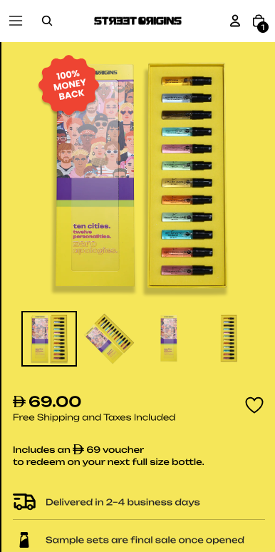

MAKE THE FIRST TRY EASIER

Try. Love. Come back.Buying a scent
without smelling it.
Replace uncertainty with a discovery experience customers can feel good about.
0.6% → 1.1%Overall conversion rate
Inside the work
The frictionChoosing an unfamiliar fragrance online made the first purchase feel risky.
The workClearer product information, easier discovery, and a sample set with a voucher towards the next full-size bottle.
The learningA discount alone showed no clear improvement in the portfolio. The redeemable discovery set addressed the decision itself and reported a 51% conversion-rate lift in its own test.
Source: portfolio, slides 6–10. Overall results and individual test lifts are separate measures.